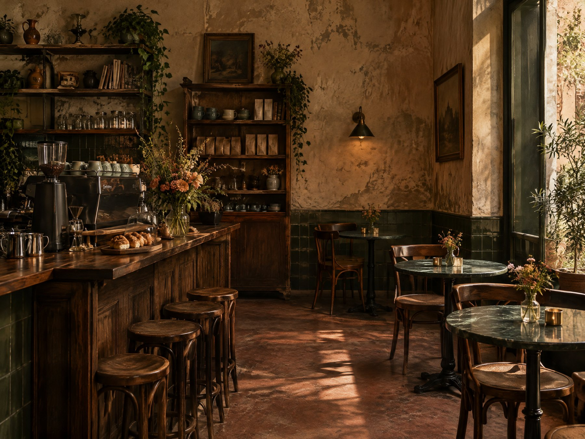

QUÉDATE UN RATO
La mesa te espera
Encuentra un lugar junto a la ventana para leer, conversar o no hacer nada.
A TU RITMO 05 / 10
Un buen lugar para hacer una pausa, donde sea que te encuentre el día.
QUÉDATE UN RATO
Encuentra un lugar junto a la ventana para leer, conversar o no hacer nada.
PARA LLEVAR
Preparamos bebidas y pan para llevar. Hecho al momento, para disfrutar en el camino.
PARA COMPARTIR
Encuentros pequeños para probar cafés nuevos y aprender sin ceremonia.

GRUPOS PEQUEÑOS
Pregunta por opciones para compartir café y pan en equipos o reuniones pequeñas.
Escríbenos →